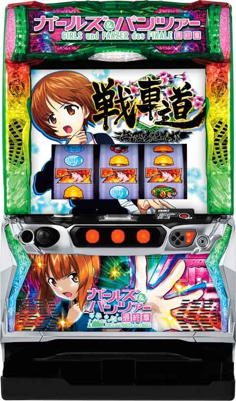

Lガールズ&パンツァー

【天井情報】
CZ天井
CZ間300G+α CZ超高確移行しCZ当選濃厚。
※メニュー画面でCZ間のG数確認可能。
CZスルー天井
CZ7回スルー 8回目CZでAT確定。
※AT単発後は2回目のCZがスルー天井に選ばれやすい？
※前回のATで継続高校に敗北していた場合はスルー天井5スルー(6回目)に短縮。
AT間天井
500G または1100G+α消化でAT確定のCZ当選。
※朝イチは約65%で天井500Gが選ばれる。
【リセット判別】
オリンピア系はガックン判別出来ない？
【有利区間について】
差枚2200枚前後で有利切れ。
エンディング後差枚プラスでも有利切れ。
有利区間切れ後は特化ゾーン「大あんこう祭り」を経由して上位AT突入。
データ上、「大あんこう祭り」のサインは40G前後にAT直撃の信号が上がる。
狙い目
【リセット狙い】
500Gの仮天井まで
0スルー 130Gから
1スルー 130Gから(CZ間不問)
2スルー 190Gから(CZ間不問)
【仮天井当選時の挙動】
500G超えたら煽りはじめて、CZ当選後ATに当選。
510から520まで回して何も煽りなければやめ。
{kind=link}
【CZ間天井狙い、ベル回数狙い】
0スルー 150Gから
2スルー以降 180Gから(ベル回数0想定)
1スルー 110Gから
前回AT単発後
積極派 0Gから
慎重派 30Gから
ヨハネスブルクステージに移行した周期は高確以上確定のためCZ当選まで。
ベル回数狙い(予想)
通常ステージ 狙えない
火山&海底 ４回から
※CZ2回目はスルー天井のチャンス。
※メニュー画面BC自由学園1回戦負けは前回単発。
※ベルカウンター7回到達でCZ抽選。
ボーダー調整に少し影響ありそう。
【AT間天井狙い】
720Gから(CZ間0G想定)
ボーダー調整(予想)
CZ間50G -20G
CZ間100G -50G
CZ間150G -70G
CZ4スルー -50G
※CZハマりG数や、CZスルー回数でボーダー調整。
【500G仮天井狙い】
430Gから500G過ぎの前兆確認
【CZスルー天井狙い】
5スルーから
継続高校敗北後
3スルーから
【ボコポイント狙い】
獲得量示唆大 次回CZまで解放まで打てるか不明
所持量示唆大 解放まで
{kind=link}
【有利区間切れ狙い】
AT後やCZ後の差枚で押し引きする。差枚1600枚以上なら不問でATまたはCZ当選まで。
有利切れの条件は必ず確認。
0スルー0Gからの場合
AT終了後差枚1600枚以上
1スルー0Gからの場合
前回CZ終了後差枚1400枚以上
※前回単発後なら差枚500枚以上
2スルー0Gからの場合
前回CZ終了後差枚1200枚以上
かつ前回継続高校敗北後
または差枚1600枚以上
差枚1000枚以上ならボーダー下げれる。(数値で出せないため各自の判断で)
【CZ終了画面キャラ狙い】
人数5人ならATまで？
アンコウ衣装の場合はアンコウ無双チャレンジの示唆だからCZまで？
やめ時
CZ失敗時 終了画面のキャラ確認してヤメ
AT終了後 即やめ
※エンディング後や9戦突破後は上位へ行くので即やめ厳禁
0スルー狙い時 CZ終了画面5人の時は1スルー消化した方が良さそう。
その他
継続高校負け後
メニューで確認可
恩恵天井短縮
狙い目は上記確認
{kind=link}
参考元
基本情報
- メーカー: 平和
- 機械割: 98.1% 〜 112.1%
- 導入開始日: 2024年02月05日（月）
- ゲーム性概要: スマスロで「ガルパン」が登場。 通常時はレア役やベル7回成立時に抽選されるCZからATを目指すゲーム性で、CZは期待度の異なる4種類が存在する。 今作の「戦車道」はSTタイプになっていて、攻防パートと勝利報酬のボーナスを繰り返して出玉を増やす仕様。おなじみの勝利ランクによって報酬が変化する。9戦勝利できれば約88%ループの「戦車道無限軌道」へ突入。「戦車道無限軌道」はバトル敗北orエンディングまで継続し、エンディング到達後は「大あんこう祭り」を経由して「戦車道無限軌道」へ再突入する。


打ち方
打ち方・小役
打ち方（小役狙い）
「最初に狙う絵柄」

左リールにBARを狙っていれば、中＆右リールはフリー打ちでOKだ。
「レア役の停止形」

変則押しはNG

通常時・AT中共通で、押し順ナビなし時は左リール第1停止での消化を推奨する。
解析情報通常時
小役関連
小役確率
| 役 | 確率 |
|---|---|
| 1枚ベル | 1/12.5 |
| 3枚ベル | 1/65.5 |
| ベルリプレイ | 1/30.1 |
| 弱チェリー | 1/50.0 |
| 強チェリー | 1/256.0 |
| チャンス目 | 1/299.3 |
| 双眼鏡 | 1/72.8 |
| リプレイA | 1/11.3 |
| リプレイB | 1/64.0 |
| 共通1枚役（ハズレ目） | 1/4.2 |
| 左1stベル揃い合算 | 1/7.8 |
| 左1stリプレイ合算 | 1/9.6 |
| レア役合算 | 1/24.4 |
※通常時、AT中の作戦中・ラストジャッジ中の確率
押し順ベル確率
| 役 | 確率 |
|---|---|
| 押し順ベルA | 1/3.5 |
| 押し順ベルB | 1/4.9 |
| 合算 | 1/2.1 |
※押し順ベルA…第1停止さえ正解すれば14枚or1枚ベルが揃う ※押し順ベルB…押し順通りに押せば1/2で14枚ベルが揃う
リプレイAとリプレイBの解説
| 役 | 解説 |
|---|---|
| リプレイA | どこから押してもリプレイが揃う |
| リプレイB | 左1st時は上段にリプレイが揃う |
| リプレイB | 戦車道の隊長戦やボーナス中など特定の状態で 2択当ての「当てさえすれば勝つんです」が発生 |
| リプレイB | 2択正解で双眼鏡が揃う |
CZ抽選
通常時はレア役とベル7回入賞ごとに、内部状態を参照してCZを抽選。超高確中は連続演出に発展した時点で成功（CZ当選）濃厚だ。 連続演出中はフェイクでもレア役でCZ書き換えが抽選される。
「リール下の戦車でベル回数を示唆」

ベルが入賞するごとに戦車が進んでいき、一番右まで到達すればCZを抽選。背景や“チャンス”の文字色で、ベル7回成立時の期待度を示唆。設定変更時などは初期ポイントを持っていることがある。
連続演出発展期待度序列
| 役 | 序列 |
|---|---|
| 弱チェリー | 低 |
| ベル7回 | ↓ |
| チャンス目／双眼鏡 | ↓ |
| 強チェリー | 高 |
連続演出中の成功書き換え当選率
| 役 | 当選率 |
|---|---|
| 弱チェリー | 25.0% |
| 双眼鏡／チャンス目 | 100% |
| 強チェリー | 100% |
CZ当選率
レア役とベル7回成立時に連続演出が発生するかどうかを抽選。連続演出は 当選時の内部状態によって成否（CZの当否）を抽選 、失敗の場合は連続演出中のレア役で成功への書き換えが抽選される。 1契機で最大2回、連続演出に当選する可能性がある（2回目のCZも前兆を経由して告知）。
［レア役］連続演出当選率
| 役 | 通常 | 高確A | 高確B | 超高確 |
|---|---|---|---|---|
| 弱チェリー | 0.4% | 0.8% | 1.6% | 1.6% |
| 双眼鏡・チャンス目 | 50.0% | 60.2% | 75.0% | 75.0% |
| 強チェリー | 100% | 100% | 100% | 100% |
［ベル7回］連続演出当選率
| 回数 | 当選率 |
|---|---|
| 設定変更後1回目 | 70.3% |
| AT終了後1回目 | 100% |
| 上記以外 | 30.1% |
連続演出当選時の成功率（CZ当選率）
| 内部状態 | 成功率 |
|---|---|
| 通常 | 24.1% |
| 高確A | 36.1% |
| 高確B | 40.1% |
| 超高確 | 100% |
※1契機で最大2回当選するCZの平均値
内部状態関連
内部状態概要
通常時の内部状態は通常・高確A・高確B・超高確の4種類があり、 滞在状態によって連続演出当選率やCZ当選率が変化 。 設定変更時やCZ終了時は基本的に通常から始まり、レア役（おもに弱チェリー）成立時の抽選やAT間100G消化ごとに必ず昇格していく。 CZに当選するまで内部状態が転落することはない 。
内部状態の昇格・転落契機
| 項目 | 契機 |
|---|---|
| 昇格契機 | レア役（弱チェリーがチャンス） |
| 昇格契機 | AT間100G消化ごと（必ず1段階昇格） |
| 昇格契機 | 連続演出失敗時 |
| 転落契機 | CZ当選 |
| 備考 | 設定変更時、CZ終了時は基本的に通常スタート |
| 備考 | AT終了時は高確スタートの可能性あり |
内部状態ごとの特徴
| 状態 | 特徴 |
|---|---|
| 通常 | デフォルト |
| 高確A | CZ当選率アップ |
| 高確B | CZ当選率大幅アップ |
| 超高確 | 連続演出発展でCZ濃厚 |
通常時の内部状態滞在比率
| 状態 | 比率 |
|---|---|
| 通常 | 35.4% |
| 高確A | 33.2% |
| 高確B | 22.9% |
| 超高確 | 8.5% |
内部状態移行率
内部状態は弱チェリー・CZ連続演出失敗時に昇格を抽選。通常時100G消化（AT間ゲーム数）ごとに必ず1段階昇格する。CZ当選まで内部状態が転落することはない。
AT終了後・内部状態振り分け
| 内部状態 | 振り分け |
|---|---|
| 通常 | 79.7% |
| 高確A | 19.5% |
| 高確B | 0.4% |
| 超高確 | 0.4% |
［弱チェリー］内部状態昇格率 通常滞在時
| 設定 | 通常のまま | 高確Aへ | 高確Bへ | 超高確へ |
|---|---|---|---|---|
| 1 | 80.9% | 17.2% | 2.0% | ー |
| 2 | 79.7% | 18.0% | 2.3% | ー |
| 3 | 78.1% | 18.8% | 3.1% | ー |
| 4 | 64.1% | 31.3% | 4.7% | ー |
| 5 | 62.1% | 32.8% | 5.1% | ー |
| 6 | 60.2% | 34.4% | 5.5% | ー |
高確A滞在時
| 設定 | 通常へ | 高確Aのまま | 高確Bへ | 超高確へ |
|---|---|---|---|---|
| 1 | ー | 89.8% | 9.8% | 0.4% |
| 2 | ー | 89.1% | 10.5% | 0.4% |
| 3 | ー | 86.7% | 12.9% | 0.4% |
| 4 | ー | 78.1% | 21.5% | 0.4% |
| 5 | ー | 76.6% | 23.0% | 0.4% |
| 6 | ー | 75.0% | 24.6% | 0.4% |
高確B滞在時
| 設定 | 通常へ | 高確Aへ | 高確Bのまま | 超高確へ |
|---|---|---|---|---|
| 1 | ー | ー | 99.6% | 0.4% |
| 2 | ー | ー | 99.6% | 0.4% |
| 3 | ー | ー | 99.6% | 0.4% |
| 4 | ー | ー | 99.6% | 0.4% |
| 5 | ー | ー | 99.6% | 0.4% |
| 6 | ー | ー | 99.6% | 0.4% |
［連続演出失敗後］内部状態昇格率 通常滞在時
| 設定 | 通常のまま | 高確Aへ | 高確Bへ | 超高確へ |
|---|---|---|---|---|
| 1 | 80.5% | 17.2% | 2.0% | 0.4% |
| 2 | 79.3% | 18.0% | 2.3% | 0.4% |
| 3 | 77.7% | 18.8% | 3.1% | 0.4% |
| 4 | 63.7% | 31.3% | 4.7% | 0.4% |
| 5 | 61.7% | 32.8% | 5.1% | 0.4% |
| 6 | 59.8% | 34.4% | 5.5% | 0.4% |
高確B滞在時
| 設定 | 通常へ | 高確Aへ | 高確Bのまま | 超高確へ |
|---|---|---|---|---|
| 1 | ー | ー | 98.4% | 1.6% |
| 2 | ー | ー | 98.4% | 1.6% |
| 3 | ー | ー | 98.4% | 1.6% |
| 4 | ー | ー | 98.4% | 1.6% |
| 5 | ー | ー | 98.4% | 1.6% |
| 6 | ー | ー | 98.4% | 1.6% |
前兆
前兆中の書き換え抽選
フェイク前兆中は本前兆への昇格を抽選。内部的にガルパンレースやあんこう無双の本前兆中は、成功確定への書き換え抽選をおこなう（どちらの抽選も当選率は共通）。
前兆中・本前兆昇格＆成功確定への書き換え当選率
| 役 | 昇格率・当選率 |
|---|---|
| 弱チェリー | 3.1% |
| 強チェリー | 40.2% |
| 双眼鏡・チャンス目 | 20.3% |
※フェイク前兆→本前兆への昇格および ガルパンレース・あんこう無双チャレンジを成功確定へ書き換え
CZ共通
CZ確率
| 設定 | 確率 |
|---|---|
| 1 | 1/133.9 |
| 2 | 1/133.0 |
| 3 | 1/130.8 |
| 4 | 1/123.1 |
| 5 | 1/121.1 |
| 6 | 1/118.9 |
設定変更時・CZ種別振り分け
設定変更後1回目のCZはガルパンレースのチャンス！
設定変更時以外・CZ種別振り分け AT終了後1回目
| 設定 | ガルパンチャンス | ガルパンレース | あんこう無双 チャレンジ |
|---|---|---|---|
| 1 | 75.0% | 24.6% | 0.4% |
| 2 | 調査中 | 調査中 | 調査中 |
| 3 | 調査中 | 調査中 | 調査中 |
| 4 | 調査中 | 調査中 | 調査中 |
| 5 | 調査中 | 調査中 | 調査中 |
| 6 | 調査中 | 調査中 | 調査中 |
AT終了後2回目～
| 設定 | ガルパンチャンス | ガルパンレース | あんこう無双 チャレンジ |
|---|---|---|---|
| 1 | 89.8% | 9.8% | 0.4% |
| 2 | 調査中 | 調査中 | 調査中 |
| 3 | 調査中 | 調査中 | 調査中 |
| 4 | 調査中 | 調査中 | 調査中 |
| 5 | 調査中 | 調査中 | 調査中 |
| 6 | 調査中 | 調査中 | 調査中 |
CZ回数ごとの特徴
| CZ回数 | 特徴 |
|---|---|
| 1回目 | ガルパンレース当選のチャンス |
| 2回目 | AT当選期待度アップ、戦車道単発後ならさらにチャンス!? |
| 6回目 | 継続高校敗北後は天井 |
| 8回目 | 天井 |
［戦車道単発終了後および継続高校敗北後］ CZ天井回数振り分け
| 天井回数 | 戦車道単発終了後 | 継続高校敗北後 |
|---|---|---|
| 1回目 | 0.4% | 0.4% |
| 2回目 | 24.6% | 9.8% |
| 6回目 | ー | 89.8% |
| 8回目 | 75.0% | ー |
次回アナザーウォー発生抽選
AT終了時とCZ終了時に、次のCZ成功時にアナザーウォーが発生するかを抽選。当選時はガルパンチャンスの場合はWINの文字色が虹に変化、ガルパンレースの場合はみほ以外のキャラが勝利する（愛里寿を除く）。
CZ成功時・アナザーウォー発生率
| CZ | 発生率 |
|---|---|
| ガルパンチャンス | 1.6% |
| ガルパンレース | 30.1% |
［虹のWIN］

ガルパンチャンス
ガルパンチャンス概要

AT当選をかけたチャンスゾーンで、小役が成立するほど期待度アップ。5種類の演出パターンから任意で選択できる。
ガルパンチャンス性能
| 項目 | 内容 |
|---|---|
| 当選契機 | レア役、ベル7回成立時の抽選 |
| 継続ゲーム数 | 10G |
| 消化中の抽選 | 小役が入賞するほど成功期待度アップ |
| 成功期待度 | 32.1% |
ガルパンチャンス成功率
| 役 | 成功率 |
|---|---|
| 小役4回入賞 | 40%以上 |
| 双眼鏡／チャンス目 | 約25% |
| 強チェリー | 約50% |
［バトル告知］

［最終ゲーム告知］

［耐久告知］

［完全告知］

［違和感告知］

成功抽選
消化中の小役でポイントを獲得していき、100ptに到達すれば成功確定。リプレイ・ベル揃いで獲得できるポイントはほぼ10ptだが、初期ポイントを持っている可能性があるので、小役の入賞回数が少なくもチャンスはある。
ガルパンチャンス初期ポイント振り分け
| ポイント | 振り分け |
|---|---|
| 0pt | 35.9% |
| 30pt | 39.1% |
| 60pt | 25.0% |
※設定変更時、ATorCZ終了時に次のCZがガルパンチャンスの場合に抽選
ガルパンチャンス本前兆中・ポイント加算率
| 役 | ＋30pt |
|---|---|
| 弱チェリー | 6.3% |
| 強チェリー | 60.2% |
| 双眼鏡・チャンス目 | 30.1% |
※100p到達後はボーナス枚数上乗せ抽選
初期ポイントと本前兆中のポイント加算抽選を加味した ガルパンチャンス開始時の保有ポイント割合
| 設定 | 0pt | 30pt | 60pt | 90pt | 100pt |
|---|---|---|---|---|---|
| 1 | 32.8% | 38.7% | 26.1% | 2.2% | 0.1% |
| 2 | 32.9% | 38.6% | 26.2% | 2.2% | 0.1% |
| 3 | 32.9% | 38.6% | 26.2% | 2.2% | 0.1% |
| 4 | 32.8% | 38.6% | 26.2% | 2.3% | 0.1% |
| 5 | 32.8% | 38.7% | 26.2% | 2.3% | 0.1% |
| 6 | 32.8% | 38.5% | 26.3% | 2.3% | 0.1% |
初期ポイント・本前兆中の抽選・CZ回数ごとの成功抽選・ 天井を加味したトータルの保有ポイント割合
| 設定 | 0pt | 30pt | 60pt | 90pt | 100pt |
|---|---|---|---|---|---|
| 1 | 29.0% | 34.1% | 23.1% | 2.0% | 11.9% |
| 2 | 28.8% | 33.8% | 22.9% | 1.9% | 12.6% |
| 3 | 28.2% | 33.1% | 22.5% | 1.9% | 14.3% |
| 4 | 27.1% | 31.8% | 21.6% | 1.9% | 17.6% |
| 5 | 26.1% | 30.9% | 20.9% | 1.8% | 20.3% |
| 6 | 25.3% | 29.7% | 20.2% | 1.7% | 23.1% |
※天井到達による成功（100pt獲得）分も含む
小役揃い時の獲得ポイント振り分け
| 役 | 10pt | 100pt |
|---|---|---|
| リプレイ・ベル揃い | 98.8% | 1.2% |
| 弱チェリー | 96.9% | 3.1% |
| 双眼鏡・チャンス目 | 75.0% | 25.0% |
| 強チェリー | 50.0% | 50.0% |
ガルパンチャンス開始時・成功率（100pt獲得率）
※CZ開始時に、CZの回数に応じて100ptを抽選。当選時はCZ失敗時に100ptを獲得
ガルパンレース
ガルパンレース概要

AT当選期待度の高い上位チャンスゾーン。みほがレースで勝利すればAT当選、愛里寿勝利で失敗となる。その他のキャラが勝った場合はアナザーウォーが確定する。
ガルパンレース性能
| 項目 | 内容 |
|---|---|
| 当選契機 | CZ当選時の一部 |
| 消化中の抽選 | 突入時に成功抽選、失敗時はレア役で書き換え抽選 |
| 備考 | みほ勝利で戦車道、愛里寿勝利で失敗 その他のキャラ勝利でアナザーウォー みほまほ勝利はあんこう無双 |
| 成功期待度 | 47.0% |
ガルパンレース成功書き換え当選率
| 役 | 当選率 |
|---|---|
| 弱チェリー | 3.1% |
| 双眼鏡／チャンス目 | 約25% |
| 強チェリー | 約50% |
「勝利するキャラに注目！」


ボコミュージアム
ボコミュージアム概要

AT＋アナザーウォー濃厚となる特殊チャンスゾーンで、ボコポイントMAX後のCZ当選時は必ずボコミュージアムに突入する（ボコポイントMAX以外からも突入の可能性あり）。当選確率は 約1/10000 程度。エンディング到達（有利区間リセット）までポイントはクリアされない。
あんこう無双チャレンジ
あんこう無双チャレンジ概要


突入した時点でボーナス（戦車道）は確定していて、消化中の成立役に応じてあんこう無双を抽選する。レア役を引けば成功の大チャンス！
あんこう無双チャレンジ性能
| 項目 | 内容 |
|---|---|
| 当選契機 | CZ当選時の一部 |
| 消化中の抽選 | 成立役に応じた成功抽選 |
| 備考 | 成功であんこう無双へ 失敗しても戦車道は確定 |
| 成功期待度 | 60%以上 |
あんこう無双チャレンジ中・あんこう無双当選率
| 役 | 当選率 |
|---|---|
| ベル・リプレイ | 16.4% |
| 弱チェリー | 50.0% |
| 強チェリー | 100% |
| 双眼鏡・チャンス目 | 75.0% |
ボコポイント
ボコポイント概要

CZ（ガルパンチャンス・ガルパンレース）失敗時にポイントが蓄積されていき、MAXの100pt到達後のCZ当選でボコミュージアム（AT確定）に突入。設定変更後やエンディング到達後に初期ポイントが抽選され、設定変更後はポイント量が大きく優遇される。
ボコポイント性能
| 項目 | 内容 |
|---|---|
| 獲得契機 | ガルパンチャンス・ガルパンレース失敗時 （必ず1pt以上獲得） |
| 獲得契機 | ガルパンレース失敗時の方が多く ポイントを獲得しやすい |
| 100pt到達時の恩恵 | 次のCZがボコミュージアム確定（※） |
| その他 | ボコミュージアム突入orエンディングまで ポイントはリセットされない |
| その他 | 設定変更時はボコミュージアム発動後に比べて 初期ポイント抽選が優遇（約40%で75pt以上） |
内部的にCZ成功確定かつアナザーウォーに当選していた場合や、当選しているCZがあんこう無双チャレンジの場合、ポイントは消費されない（100pt到達かつエンディング非到達であれば次のCZでボコミュージアムに突入）。
天井
天井短縮当選率
設定変更時・AT終了後ともに天井を500Gに短縮する抽選がおこなわれる。設定変更時は短縮されやすいので狙い目だ。
天井短縮当選率（設定1）
| 契機 | 当選率 |
|---|---|
| 設定変更後 | 65.2% |
| 戦車道終了後 | 10.2% |
※当選時は天井が500Gに短縮
演出動画
ロングフリーズ
あんこう無双を経由して戦車道無限軌道へ突入するプレミアム演出。
フリーズ
ロングフリーズ


ロングフリーズ確率＆恩恵
| 項目 | 内容 |
|---|---|
| 確率 | 約1/85000（通常時のみ発生） |
| 恩恵 | あんこう無双＋隊長戦レベル3 |
解析情報ボーナス時
エピソードボーナス（初当り）
エピソードボーナス概要

初当り時は基本的にエピソードボーナスを経由して戦車道へ移行。ボーナス中はアイコン獲得を抽選するほか、ライバル校が味方として参戦するアナザーウォーも抽選している。
エピソードボーナス性能
| 項目 | 内容 |
|---|---|
| 1Gあたりの純増 | 約4.7枚 |
| 獲得枚数 | 約100枚 |
| 消化中の抽選 | アイコン獲得、アナザーウォー発生抽選 |
「アイコン獲得」

「アナザーウォー」


参戦するキャラによって恩恵が変化する。
アイコン獲得率
ボーナス消化中は1枚役とレア役でアイコンの獲得を抽選する（プロローグ中はレア役でのみ抽選）。
ボーナス中・アイコン獲得率
| 役 | 獲得率 |
|---|---|
| 1枚役 | 0.8% |
| 弱チェリー | 10.2% |
| 強チェリー | 100% |
| 双眼鏡／チャンス目 | 25.0% |
| トータル獲得確率 | 1/82.8 |
戦車道（AT）
戦車道概要

攻防パートと勝利後のボーナスをループさせて出玉増加を目指すゲーム性。勝利時のランクによって報酬が異なり、最上位のSSランクならあんこう無双へ、戦車道で9勝した場合は大あんこう祭りへ突入する（あんこう無双、大あんこう祭りともに消化後は戦車道無限軌道突入）。
戦車道性能
| 項目 | 内容 |
|---|---|
| 1Gあたりの純増 | 現状維持 |
| 継続ゲーム数 | 不定（味方車輌全撃破で終了） |
| 消化中の抽選 | 小役入賞で敵をロックオン 続けて小役が入賞するほど勝利期待度アップ 保証 （最低3G） 消化後のハズレで味方撃破のピンチ |
| 平均ループ率 | 約76% |
| 平均獲得枚数 | 約637枚（設定1） |
バトルの対戦相手
| バトル | 相手 |
|---|---|
| 1～3戦目 | BC自由学園 |
| 4～6戦目 | 知波単学園 |
| 7～9戦目 | 継続高校 |
| 備考 | 3・6戦目勝利時はランクA以上 9戦目勝利で大あんこう祭り （戦車道無限軌道） 確定 |
※対戦校によってボーナス期待度が変化
「味方決定」

味方が多いほど多く撃破抽選を受けられる。基本は3輌で、ボーナス中などに獲得するアイコン1個につき1輌ずつ増加する。アイコンが点灯しているチームが勝利期待度の高いチャンスチームだ。
「攻撃抽選」


リプレイ以外の小役が入賞すると敵をロックオン。 ロックオン後は小役連続が続く限り追撃がおこなわれ、途切れたタイミングの敵残り隊数を参照して勝敗を決定する 。全部隊を撃破できれば勝利確定だ。ロックオンには白と赤の2種類があり、赤なら追撃移行まで確定。双眼鏡・チャンス目・強チェリーは赤ロックオンが確定する。
成立役別・ロックオンの種別
| 役 | ロックオン |
|---|---|
| ベル入賞 | 白or赤 |
| 弱チェリー | 白or赤 |
| 双眼鏡／チャンス目 | 赤＋複数撃破のチャンス |
| 強チェリー | 赤＋3輌以上撃破 |
※ロックオン時に撃破した車輌数は次ゲームで告知が発生
「味方全部隊が撃破されると終了」

味方チームには最低3Gの保証が存在し、保証ゲーム終了後のハズレで撃破されるピンチ。残り1隊（みほ）になると、隊長戦が発生。隊長戦中はレア役を引ければ勝利の大チャンスとなる。当てさえすれば勝つんです発生時は、2択正解で勝利!?
隊長戦レベルとチャンスチーム選択レベル
隊長戦の勝敗に影響を与える 隊長戦レベル と、チャンスチームの選択率に影響を与える チャンスチーム選択レベル が存在。レベルはそれぞれ1〜3の3段階で、隊長戦レベルは戦車道突入画面、チャンスチーム選択レベルは戦車道突入時のエピソードで示唆される。
［突入画面］


突入画面のキャラに注目！
［エピソード］

エピソードでチャンスチーム選択レベルを示唆。サメさんチーム参戦エピソードならレベル2以上濃厚だ。
押し順ベル確率

戦車道消化中は 押し順ナビが発生することで小役入賞をアシスト してくれる。ナビはフルナビと2択ナビの2種類あり、フルナビはナビ通りに押せばベルが入賞。2択ナビは押し順正解＝ベル揃いとなるのでロックオン発生や追撃が継続。もちろん、リプレイやレア役など、ベル以外の小役が入賞した場合も追撃は継続する。
押し順ベル確率
※押し順ベルA…第1停止さえ正解すれば14枚or1枚ベルが揃う ※押し順ベルB…押し順通りに押せば1/2で14枚ベルが揃う
作戦


追撃突入時や追撃終了時などに作戦が発生すれば複数撃破の大チャンス。追撃中の液晶枠色で追撃発生期待度を示唆している。作戦中のレア役は一発勝利にも期待できる。
作戦中のレア役・勝利期待度
| 役 | 期待度 |
|---|---|
| 弱チェリー | 約25% |
| 強レア役 | 100% |
「追撃中の枠色」

「エピソード作戦」

原作を再現したエピソード作戦が発生すれば激アツ！
当てさえすれば勝つんです（当て勝つ）

戦車道中やボーナス消化中など、さまざまなタイミングで発生する2択チャレンジ。押し順当てに成功して双眼鏡が揃えば状態に応じた恩恵を獲得できる。
アナザーウォー

ライバル校が戦車道に味方として参戦する特殊状態。参戦したキャラによって得られる恩恵が変化する。
アナザーウォー発生時の恩恵
| 参戦キャラ | 恩恵 | 備考 |
|---|---|---|
| ダージリン | セット開始時に アイコン獲得高確率へ | 敗北or エンディングまで継続 |
| ケイ | 各校の最終戦まで短縮 | 3回勝利で無限軌道へ |
| アンチョビ | 即勝利のチャンス （専用演出が発生） | 失敗or エンディングまで継続 |
| カチューシャ | 勝利ランクが1段階アップ （初戦勝利確定） | 敗北or エンディングまで継続 |
| まほ | 勝利確定 | ストック1or9個獲得 |
ガルパンレース勝利時・キャラ振り分け
※みほまほはあんこう無双確定
ボコミュージアム経由・キャラ振り分け
| キャラ | 振り分け |
|---|---|
| まほ | 34.4% |
| カチューシャ | 19.9% |
| ケイ | 19.9% |
| ダージリン | 19.9% |
| アンチョビ | 5.9% |
| みほまほ | ー |
「ダージリン参戦時」

もっと休憩しますわ・アイコン獲得率
| 役 | 獲得率 |
|---|---|
| ベル | 35.2% |
| レア役 | 100% |
※保証として突入時に1個獲得
突入時にアイコンを1個獲得。もっと休憩しますわ消化中は高確率でアイコンを獲得できる。
「ケイ参戦時」

各校の最終戦（3戦目）まで短縮するので、3回勝利で無限軌道へ突入！
「アンチョビ参戦時」

アンツィオ決起会成功率
| 抽選契機 | 成功率 |
|---|---|
| 突入時 | 約55% |
| 弱レア役 | 約25% |
| 強レア役 | 100% |
※当て勝つ成功時もボーナス確定
初回は成功（ボーナス）確定。2戦目以降はアンツィオ決起会突入時に成功抽選がおこなわれ、漏れた場合は消化中のレア役で成功への書き換えを抽選する。
「カチューシャ参戦時」

初戦は勝利確定。勝利時のランクが1段階アップ！
「まほ参戦時」

まほ参戦時のストック個数振り分け
| ストック | 振り分け |
|---|---|
| 1個 | 99.6% |
| 9個 | 0.4% |
チャンスチームごとの性能
| チーム | 性能 |
|---|---|
| 走 | 追撃発生率アップ（ナビ発生率アップ） |
| 攻 | 追撃時の複数撃破率アップ＆特殊作戦発生率アップ |
| 守 | 撃破されにくい（保証ゲーム数が優遇） |
| 襲 | 即ボーナス当選のチャンス（期待度約50%） |
襲チームのボーナス当選率
| 役 | 当選率 |
|---|---|
| レア役以外 | 10.2% |
| レア役 | 100% |
［走］

［攻］

［守］

［襲］

EX追撃

追撃時の一部で移行する勝利濃厚状態。小役が入賞する限り継続し、ボーナス枚数上乗せ＋ランクアップが抽選される。強レア役成立時はランクアップ確定だ。
ダージリン参戦時のアイコン獲得率
アナザーウォーでダージリン参戦時は、セット開始時にもっと休憩中へ移行。消化中はベルでも1/3以上、レア役なら必ずアイコンを獲得できる。
チャンスチーム選択レベル別・チャンスチーム選択率
| レベル | 選択率 |
|---|---|
| 1 | 15.2% |
| 2 | 30.1% |
| 3 | 50.0% |
※戦車道無限軌道中は必ずチャンスチームを選択
隊長戦の勝利期待度
選択されている隊長戦レベルによって、バトル開始時の勝利期待度が変化。敗北の場合はバトル中のレア役で勝利への書き換えを抽選する。
隊長戦レベル別・バトル開始時の勝利当選率
| レベル | 当選率 |
|---|---|
| 1 | 0.4% |
| 2 | 25.0% |
| 3 | 50.0% |
対戦相手ごとの勝利期待度・抽選内容
追撃失敗後、シャッターが閉まっているゲームでレア役を引けばジャッジ発展確定、強レア役なら勝利も確定する。追撃回数が2〜3回のタイミングでレア役契機で発展すれば追撃4〜5回と同等の期待度に格上げ。弱チェリー契機での発展なら別途、約25%の抽選も加わるので期待度はさらに上がる。
対戦校の平均勝利期待度
| 対戦校 | 期待度 |
|---|---|
| BC自由学園 | 約80％ |
| 知波単学園 | 約70％ |
| 継続高校 | 約63％ |
味方のチーム数＆対戦校の平均勝利期待度
| チーム数 | BC自由学園 | 知波単学園 | 継続高校 |
|---|---|---|---|
| 3チーム | 69.6% | 58.5% | 53.7% |
| 4チーム | 79.2% | 65.1% | 60.1% |
| 5チーム | 83.1% | 70.6% | 64.3% |
| 6チーム | 85.8% | 75.3% | 68.9% |
| 7チーム | 87.2% | 79.3% | 72.6% |
| 8チーム | 100% | 100% | 100% |
※あんこうチームを除く味方のチーム数
押し順ベル成立時・ナビ（フルナビor1stナビ）発生率
| 対戦校 | 走チーム以外 | 走チーム |
|---|---|---|
| BC自由学園 | 約32% | 約44% |
| 知波単学園 | 約24% | 約35% |
| 継続高校 | 約18% | 約27% |
| 追撃中 | 100% |
追撃数別・ジャッジ成功率
| 追撃数 | BC自由学園 | 知波単学園 | 継続高校 |
|---|---|---|---|
| 1回 | ー | ー | ー |
| 2回 | 3.7% | 3.3% | 2.3% |
| 3回 | 4.2% | 3.5% | 2.3% |
| 4回 | 42.7% | 31.0% | 21.6% |
| 5回 | 42.7% | 31.0% | 21.6% |
| 6回 | 69.7% | 55.5% | 45.3% |
| 7回 | 69.7% | 55.5% | 45.3% |
| 8回 | 100% | 100% | 100% |
※追撃4回以上はジャッジ発展確定 追撃数の色はシャッター色 ※ジャッジ中の書き換えを含むトータル期待度
味方チームの保証ゲーム数
味方チームには2〜7Gの保証ゲーム数が設定され、保証分消化後のハズレで撃破される。守チームは保証が4G以上なので、他チームに比べて撃破されづらい。
味方1チームごとの保証ゲーム数振り分け
| 保証 | その他 | あんこうチーム | 守チーム |
|---|---|---|---|
| 2G | 78.5% | ー | ー |
| 3G | 10.5% | 75.0% | ー |
| 4G | 5.5% | 12.5% | 50.0% |
| 5G | 5.5% | 6.3% | 25.0% |
| 6G | ー | 3.1% | 12.5% |
| 7G | ー | 3.1% | 12.5% |
勝利時のランク抽選

基本的にバトル勝利時はBランクを選択。戦車道の展開や成立役によって最大SSランクまで昇格が抽選される。
ランクのトータル出現割合
| ランク | 割合 |
|---|---|
| B | 51.0% |
| A | 40.3% |
| S | 7.7% |
| SS | 1.0% |
ランク昇格契機一覧
| 契機 | 内容 | |
|---|---|---|
| 各校の3戦目勝利 | 昇格確定 | |
| 内部的に勝利確定後の 作戦～ランク表示まで | 弱チェリー | 昇格抽選 |
| 内部的に勝利確定後の 作戦～ランク表示まで | 強レア役 | 昇格確定 |
| 内部的に勝利確定後の 作戦～ランク表示まで | 当て勝つ成功 | 昇格確定 |
| 内部的に勝利確定後の 隊長戦～ランク表示まで | レア役 | 昇格確定 |
| 内部的に勝利確定後の 隊長戦～ランク表示まで | 当て勝つ成功 | 昇格確定 |
| EX追撃中 | 弱チェリー | 昇格抽選 |
| EX追撃中 | 強レア役 | 昇格確定 |
| カチューシャ参戦中の勝利 | 昇格確定 | |
| アンツィオ参戦中の 内部的に勝利確定 ～ランク表示まで | 弱レア役 | 昇格抽選 |
| アンツィオ参戦中の 内部的に勝利確定 ～ランク表示まで | 強レア役 | 昇格確定 |
| アンツィオ参戦中の 内部的に勝利確定 ～ランク表示まで | 当て勝つ成功 | 昇格確定 |
| 通せんぼ作戦勝利～ ランク表示まで （サメさんチーム強襲中） | 弱レア役 | 昇格抽選 |
| 通せんぼ作戦勝利～ ランク表示まで （サメさんチーム強襲中） | 強レア役 | 昇格確定 |
| 通せんぼ作戦勝利～ ランク表示まで （サメさんチーム強襲中） | 当て勝つ成功 | 昇格確定 |
「残り味方数別のランク昇格抽選」 バトル勝利時に出撃していない味方の数に応じてポイントを獲得。通常チームは1pt、チャンスチームは2ptで計算され、合計ポイントでランク昇格を抽選する。
残り味方数ごとの獲得ポイント
| チーム | ポイント |
|---|---|
| 通常チーム | 1pt |
| チャンスチーム | 2pt |
※勝利したチームはカウントしない
ポイント別・ランク昇格率
| ポイント | 昇格率 |
|---|---|
| 0pt | 0.4% |
| 1pt | 0.8% |
| 2pt | 1.6% |
| 3pt | 3.1% |
| 4pt | 6.3% |
| 5pt | 12.5% |
| 6pt | 25.0% |
| 7pt | 50.0% |
| 8pt以上 | 100% |
AT中ボーナス
ボーナス概要

戦車道勝利時のランクに応じて、ボーナスの枚数が変化。ボーナス中はアイコン獲得や当て勝つの発生が抽選される。
ランク別・ボーナス枚数＆当選割合
| ランク | 枚数 | 割合 |
|---|---|---|
| B | 100枚 | 51.0% |
| A | 150枚以上 | 40.3% |
| S | 200枚以上 | 7.7% |
| SS | あんこう無双（平均278枚） 消化後は戦車道無限軌道へ | 1.0% |
「アナザーウォー高確」

おもにレア役成立時に、アナザーウォー高確への移行を抽選。高確中にリプレイB（1/64.0）を引けば当て勝つが発生する。
ボーナス中・アイコン獲得率
| 役 | 獲得率 |
|---|---|
| 1枚役 | 5.1% |
| 弱チェリー | 20.3% |
| 強チェリー | 100% |
| 双眼鏡／チャンス目 | 50.0% |
| トータル獲得確率 | 1/34.9 |
あんこう無双
あんこう無双概要


敵撃破時のランクがSS時に突入。ボーナス枚数上乗せ＆ボーナス消化後は戦車道無限軌道へ移行する。
あんこう無双性能
| 項目 | 内容 |
|---|---|
| 突入契機 | あんこう無双チャレンジ成功、ロングフリーズ、 ガルパンレース（CZ）でみほまほ勝利、 戦車道勝利時のランクSS |
| 消化中の抽選 | ボーナス枚数上乗せ（平均278枚） |
| その他 | ボーナス消化後は 戦車道無限軌道へ |
大あんこう祭り
大あんこう祭り概要

戦車道で9戦勝利すると突入するボーナス枚数上乗せゾーン。あんこう無双と同様に、ボーナス枚数を消化すると戦車道無限軌道へ移行する。
大あんこう祭り性能
| 項目 | 内容 |
|---|---|
| 突入契機 | 戦車道9戦勝利時 |
| 消化中の抽選 | ボーナス枚数上乗せ |
| その他 | ボーナス消化後は戦車道無限軌道へ |
戦車道無限軌道（上位AT）
戦車道無限軌道概要

ループ率が約88%にアップした戦車道の上位版。基本的なゲームの流れは通常の戦車道と共通で、小役連で敵をロックオン＆撃破すればランクに応じたボーナスに突入する。 エンディングまで到達できれば再び大あんこう祭りを経由して戦車道無限軌道へ復帰 するので、無限ループの可能性も秘めている。
戦車道無限軌道性能
| 項目 | 内容 |
|---|---|
| 突入契機 | あんこう無双後、大あんこう祭り後 |
| 1Gあたりの純増 | 現状維持 |
| 突入率 | 約7.2%（初当り1回あたり） |
| 消化中の抽選 | 小役入賞で敵をロックオン 続けて小役が入賞するほど撃破＝勝利期待度アップ |
| 平均ループ率 | 約88% |
| 平均獲得枚数 | 1291.7枚 |
無限軌道中は味方チームすべてがチャンスチームになるので、平均ループ率が高い。
味方チーム数ごとの平均勝利期待度
| チーム数 | 期待度 |
|---|---|
| 3チーム | 81.4% |
| 4チーム | 89.3% |
| 5チーム | 92.3% |
| 6チーム | 94.2% |
| 7チーム | 95.6% |
| 8チーム | 100% |
| トータル期待度 | 約88% |
※あんこうチームを除く味方のチーム数
押し順ベル成立時・ナビ（フルナビor1stナビ）発生率
| 項目 | 走チーム以外 | 走チーム |
|---|---|---|
| 発生率 | 約30% | 約44% |
| 追撃中 | 100% | 100% |
パンツァー革命
パンツァー革命概要
シリーズおなじみの、発生した時点で大チャンスとなるパンツァー革命が本機にも搭載されている。
パンツァー革命・性能
| 革命 | 性能 |
|---|---|
| 追撃革命 | 追撃突入時の一部で発生し、勝利濃厚 |
| 追撃革命 | EX追撃が最低4回継続 ＋1回の上乗せが＋50枚以上（トータル＋200枚以上） |
| 全指示革命 | 戦車道無限軌道突入時の一部で発生 |
| 全指示革命 | 戦車道中の押し順ベルをすべてナビしてくれるので 勝率大幅アップ、バトル中の純増も約4.7枚/Gになる |
［追撃革命］

［全指示革命］

演出情報
通常時
ステージ解説
| ステージ | 内容 |
|---|---|
| 戦車を洗車します | デフォルト |
| 冬の通学路です | デフォルト |
| 会長室です | 高確示唆 |
| 大洗のヨハネスブルグです | 高確示唆 |
| BARどん底です | 前兆示唆 |
［戦車を洗車します］

［冬の通学路です］

［会長室です］

［大洗のヨハネスブルグです］

［BARどん底です］

獲得ポイント示唆
| エフェクト | 示唆 |
|---|---|
| 小 | 1pt以上 |
| 中 | 5pt以上 |
| 大 | 5pt以上かつ、85pt以上蓄積（今回獲得分含む） |
※エフェクト非発生でもCZ失敗時は必ず1pt以上を獲得
保有ポイント示唆
| エフェクト | 示唆 |
|---|---|
| 小 | 60pt以上 |
| 中 | 75pt以上 |
| 大 | 85pt以上 |
| 特大 | 激アツ |
※CZ終了後30G目は獲得示唆演出が高確率で発生
蓄積示唆は、小でも出現した時点で機械割が100%を超える。
［獲得示唆：小］

［獲得示唆：中］

［獲得示唆：大］

［保有示唆：小］

［保有示唆：中］

［保有示唆：大］

［保有示唆：特大］

戦車道（AT）
押し順ベルの構成と基本出目
1stナビの発生率は対戦校依存（走チームはナビ発生率が優遇）となっていて、継続高校＜知波単学園＜BC自由学園の順に発生しやすい。 追撃中の押し順ベル成立時は必ずナビが出るため、ナビ非発生の時点で中・右1stベルを否定してしまうが、小役が揃えば（左1stベル・リプレイ・レア役）撃破確定。ハズレと小役揃いの割合は約53%：47%となっているため、ナビなしでも半分以上は撃破できる。
押し順ベルの割合
| 押し順ベル | 確率 | 割合 |
|---|---|---|
| 押し順ベルA | 1/3.5 | 約60% |
| 押し順ベルB | 1/4.9 | 約40% |
1stナビ発生時の成立ベルごとの展開
| 押し順ベル | 展開 |
|---|---|
| 押し順ベルA | 2択正解で14枚ベル揃い、2択不正解で1枚ベル揃い |
| 押し順ベルA | →ナビが発生した時点で ベル揃い確定 |
| 押し順ベルB | 2択正解で14枚ベル揃い、2択不正解でハズレ |
| 押し順ベルB | →ナビ発生時のベル揃い期待度は 約50% |
| 押し順が 発生した時点 | 必ずベルが揃う押し順ベルAと 50%でベルが揃う押し順ベルBの割合が約6:4なので、 1stナビ発生時のベル揃い期待度は 約80% |
※追撃中の押し順ベル成立時は必ずナビが発生
押し順ナビ非発生時・小役確率＆割合
| 役 | 確率 |
|---|---|
| 左1stベル | 1/7.8 |
| リプレイ | 1/9.6 |
| レア役合算 | 1/24.4 |
| 小役揃い合算 | 1/3.7 |
| ハズレ | 1/4.2 |
| 小役揃い：ハズレ | 約53%：約47% |
「押し順ベルA or Bの押し順正解出目（14枚ベル）」

第2停止時に成功音が鳴れば14枚ベル濃厚。鳴らなかった場合でも1枚ベルの可能性は残っている。
「押し順ベルAの押し順不正解出目（1枚ベル）」

「押し順ベルBの押し順不正解出目」

1stナビ発生時の出目法則


左リールBAR狙い時の出目法則
「小役以上1確目」

「中段BAR停止からの小役以上2確目」

「ピンチ目（ハズレの可能性がある停止形）」

裏ボタン
隠しPUSH一覧
| 発生タイミング | 内容 |
|---|---|
| 通常時の 連続演出発展時 | 成功時の約50%でバイブ＆萌えカットイン発生 |
| CZ突入ゲーム | PUSHボタンを押した時の上部ランプの色で CZ回数天井＆CZの規定ポイントを示唆（※） |
| 戦車道の追撃中 | 押し順ナビ発生時 →押し順ベルA（ベル揃い確定）時の約80%でバイブ発生 |
| 戦車道の追撃中 | 押し順ナビ非発生時 →小役揃い時の約50%でバイブ発生 |
| 追撃失敗後の シャッター画面 | 勝利時の約50%でバイブ発生＆楽曲変化 |
※ランプの色は青＜黄＜緑＜赤の順にCZ回数天井が少ない orCZ成功のためのポイントを多く持っていることを示唆している